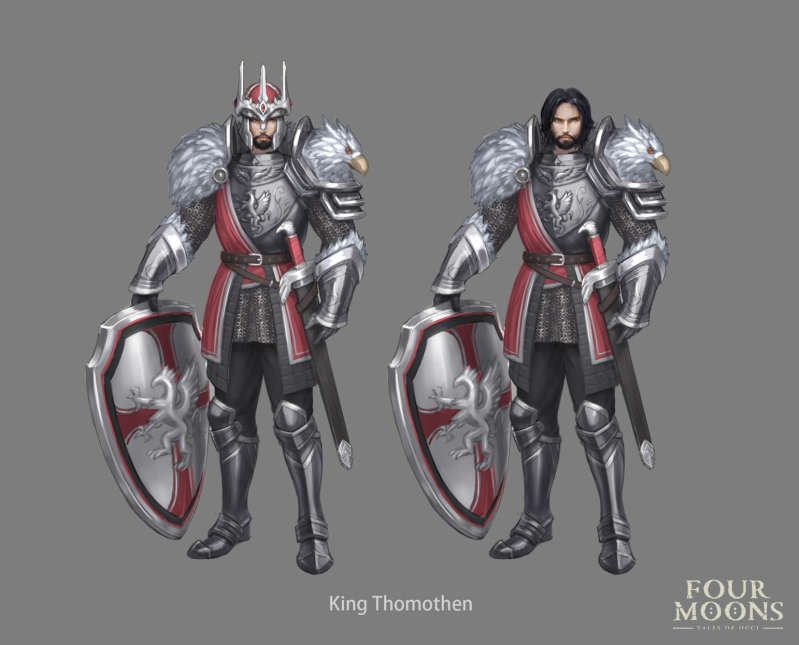

Four Moons - Tales of OCCI
 Game Brief:- The dangerous and adventurous world of Four Moons where Occi tries to find his way to save the people.
Game Brief:- The dangerous and adventurous world of Four Moons where Occi tries to find his way to save the people.
Genre:- Fantasy, Adventure, 3rd Person
Group:- Four Moons Tales of OCCI
Role:- Game Writer
Main Responsibilities
- Created, wrote and owned histories, religion and culture of the main race of Hemeians with other writers and creative leader.
- Worked in unison with other writers to brainstorm ideas and write lore.
- Learned how to collaborate in synergy with other departments and the value of dependencies.
Work Summary

I worked on a small indie project called Four Moons - tales of Occi as a writer and world builder. Here I helped to create the histories, religion and lore for the main race of the game. For creating a new and unique religion I chose to take inspiration from Confucianism, Using it I realized a religion that was formed around a mythical great hunt and a set of core philosophical tenets by which most of the followers of the religion abided by. I worked with another writer to create the day-to-day life of the people and created an intricate political system of guilds, a dynastic monarchy and a strict religious clergy. It was a satisfying project to have worked on, and I learned a lot about how to work with other writers.